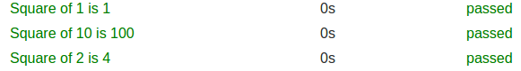
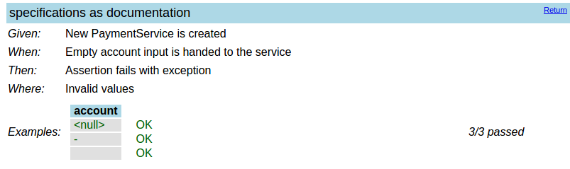

compile "org.codehaus.groovy:groovy-all:2.4.11"
testCompile "org.spockframework:spock-core:1.1-groovy-2.4"Browser Based Testing with Geb and Spock
Agenda
Short intro
Guided work
Jacob Aae Mikkelsen
Senior Software Architect at Cardlay A/S
GR8Conf EU - Organizing Team Member
External Associate Professor - University of Southern Denmark
Groovy Ecosystem Nerd
 @JacobAae
@JacobAaeBlogs The Grails Diary
Spock
Intro
Spock is:
Testing Framework for Java and Groovy (and other JVM languages)
Based on Groovy
Fully compatible with JUnit
Intro
and can:
Reduce the lines of test code
Make tests more readable
Turn tests into specifications
Funny trivia
Created by Peter Niederwieser
Does not have a logo
Combination of Specification and Mock
Released in 1.0 (finally) when Leonard Nimoy died
Current latest: 1.1
Dependencies
Mandatory Dependencies
And the Groovy Plugin in Gradle
Optional Dependencies
// only necessary if Hamcrest matchers are used
testCompile "org.hamcrest:hamcrest-core:1.3"
// allows mocking of classes (in addition to interfaces)
testRuntime "cglib:cglib-nodep:3.1"
// allows mocking of classes without default constructor (together with CGLIB)
testRuntime "org.objenesis:objenesis:2.1"Spock Basics
Spec
Groovy Class extending
spock.lang.Specification
Basic Spock Spec
class BasicSpec extends spock.lang.Specification {
void "Very small Example of a spock test"() {
expect:
21 * 2 == 42
}
}Blocks
Assert
expect
Setup Blocks
setup, given
Stimulus - Response blocks
when, then
Blocks
More:
cleanup
and
where
| Rule of thumb: Use when-then when you have side-effects, and expect when you have purely functional |
Lifecycle
def setupSpec() {
// Run once per class
}
def setup() {
// Run once per method
}
def cleanup() {
// Run once per method
}
def cleanupSpec() {
// Run once per class
}Basic Spock Example
void "Spock basic example"() {
setup:
def conferences = ['GR8Conf EU', 'GR8Conf US', 'GR8Conf IN']
expect:
conferences*.charAt(0) == ['G','G','G']
}Classical Unit Testing
Arrange
Act
Assert
In Spock: Given-When-Then
Given When Then
void "Demo of given when then"() {
given:
def conferences = ['GR8Conf EU', 'GR8Conf US', 'GR8Conf IN']
when:
conferences << 'Greach'
then:
conferences.size() == 4
}Power Assert Example
void "Power assert failure example"() {
expect:
['GR8Conf','EU'].join(' ').length() == 3
}Power Assert Example
Condition not satisfied:
['GR8Conf','EU'].join(' ').length() == 3
| | |
| 10 false
GR8Conf EUCheck Multiple Before Failing
@FailsWith(Exception)
void "Check multiple conditions and fail after all are checked"() {
when:
def list = 1..4
then:
verifyAll {
list.last() == 1
list.first() == 4
}
}Check Multiple Before Failing
Condition not satisfied:
list.last() == 1
| | |
| 4 false
[1, 2, 3, 4]
Condition not satisfied:
list.first() == 4
| | |
| 1 false
[1, 2, 3, 4]Old
void "Verify based on previous state"() {
given:
def primes = [2, 3, 5, 7, 11, 13]
when:
primes << 17
then:
primes.size() == old(primes.size()) + 1
}Async and Eventual Conditions
given:
def conditions = new PollingConditions(timeout: 10,
initialDelay: 1.5, factor: 1.25)
def machine = new Machine()
when:
machine.start()
then:
conditions.eventually {
assert machine.temperature >= 100
assert machine.efficiency >= 0.9
}Data Driven
Data Driven
void "is square"() {
when:
def sqrt = Math.sqrt(number)
then:
sqrt * sqrt == number
where:
number << [ 5, 64 , 100100 ]
}Data Driven
void "squareroot"() {
expect:
Math.sqrt(number) == sqrt
where:
number || sqrt
4 || 2
9 || 3
16 || 4
}Unroll
@Unroll
void "Square of #number is #square"() {
expect:
number * number == square
where:
number || square
1 || 1
2 || 4
10 || 100
}Unroll

Interaction Based Testing
Mocking
Mocking is the act of describing (mandatory) interactions between the object under specification and its collaborators.
Mocking
class SignupService {
PaymentService paymentService = new PaymentService()
List signedUp = []
public signup(String username, String accountNumber, BigDecimal amount) {
if( paymentService.pay(accountNumber, amount) >= amount ) {
signedUp << username
} else {
throw new NoMoneyException('Sorry you have not paid')
}
}
public List getSignedUpUsers() {
signedUp.clone()
}
}Mocking
void "Payment service must be called"() {
setup:
SignupService signupService = new SignupService()
PaymentService paymentService = Mock(PaymentService)
signupService.paymentService = paymentService
when:
signupService.signup('Jacob', '42', 100)
then:
1 * paymentService.pay('42', 100)
thrown(NoMoneyException)
}Mocking
1 * paymentService.pay('42',100)
| | | |
| | | argument constraint
| | method constraint
| target constraint
cardinalityMocking - Cardinality
1 * paymentService.pay('42',100) // Exactly once
0 * paymentService.pay('42',100) // Zero times
(1..4) * paymentService.pay('42',100) // 1 to 4 times
(1.._) * paymentService.pay('42',100) // At least onceMocking - Argument
// Parameter values must match
1 * paymentService.pay('42',100)
// Any parameter list
1 * paymentService.pay(*_)
// Constraints using closures
1 * paymentService.pay({ it.length() > 1},{it > 200})Mock Checking - Order
| If the order of execution of your mocked methods are important, you can force check the order by separating them with the and: block |
Stubbing
Stubbing is the act of making collaborators respond to method calls in a certain way.
When stubbing a method, you don’t care if and how many times the method is going to be called; you just want it to return some value, or perform some side effect, whenever it gets called.
Stubbing
void "Payment not accepted throws exception"() {
setup:
SignupService signupService = new SignupService()
PaymentService paymentService = Mock(PaymentService)
signupService.paymentService = paymentService
and:
paymentService.pay(_,_) >> 0
when:
signupService.signup('Jacob', '42', 100)
then:
thrown(NoMoneyException)
}Stubbing
void "Payment accepted puts user on list"() {
setup:
SignupService signupService = new SignupService()
PaymentService paymentService = Mock(PaymentService)
signupService.paymentService = paymentService
and:
paymentService.pay(_,_) >> 120
when:
signupService.signup('Jacob', '42', 100)
then:
'Jacob' in signupService.signedUpUsers
}Stubbing - Multiple return values
void "Multiple payments with different value"() {
setup:
SignupService signupService = new SignupService()
PaymentService paymentService = Mock(PaymentService)
signupService.paymentService = paymentService
and:
paymentService.pay(_,_) >>> [100, 80, 60]
when:
signupService.signup('Person 1', '42', 70)
signupService.signup('Person 2', '42', 70)
signupService.signup('Person 3', '42', 70)
then:
signupService.signedUpUsers == ['Person 1','Person 2']
thrown(NoMoneyException)
}Extensions
Built-In Extensions
Most of Spock’s built-in extensions are annotation-driven.
@Ignore@IgnoreRest@IgnoreIf@FailsWith@Stepwise
Extension: @Timeout
@Timeout(5)
def "I fail if I run for more than five seconds"() { ... }
@Timeout(value = 100, unit = TimeUnit.MILLISECONDS)
def "I better be quick" { ... }Extension: ConfineMetaClassChanges
@Stepwise
class FooSpec extends Specification {
@ConfineMetaClassChanges([String])
def "I run first"() {
when:
String.metaClass.someMethod = { delegate }
then:
String.metaClass.hasMetaMethod('someMethod')
}
def "I run second"() {
when:
"Foo".someMethod()
then:
thrown(MissingMethodException)
}
}Specifications as Documentation
Use dependency:
testCompile( 'com.athaydes:spock-reports:1.3.1' ) {
transitive = false // this avoids affecting your version of Groovy/Spock
}
// if you don't already have slf4j-api and an implementation of it in the classpath
testCompile 'org.slf4j:slf4j-api:1.7.13'
testCompile 'org.slf4j:slf4j-simple:1.7.13'Specifications as Documentation
void "specifications as documentation"() {
given: 'New PaymentService is created'
PaymentService paymentService = new PaymentService()
when: 'Empty account input is handed to the service'
paymentService.pay(account,100)
then: 'Assertion fails with exception'
thrown(PowerAssertionError)
where: 'Invalid values'
account << [null, '-', ' ']
}Specifications as Documentation

Functional testing
Functional testing
Ignores the specifics of the underlying software component under test.
Whitebox / Greybox
Merely asserts that providing certain input results in certain output.
Web-application: Programmatically controlling a web browser to simulate the actions of a user on a web page.

Geb history
Started in November 2009
Created by Luke Daley
Current project lead Marcin Erdman
Geb Implementation
Build on top of the WebDriver browser automation library
successor to the Selenium Remote Control (RC) testing framework.
Selenium RC → JavaScript to interact
WebDriver → native browser drivers
Use JUnit or Spock
WebDriver
Very active development
Stable API and feature set
Verbose
Low level
Not a complete solution
Why Geb
jQuery like selector syntax
Power of WebDriver (Easier api)
Robustness of Page Object modeling
Expressiveness of the Groovy language
Integrates well with build systems (Gradle/Maven)
Excellent user manual/documentation
Stack

Using Geb
Geb Selectors (1)
// match all 'p' elements on page
$("p")
// match the first 'p' element on the page
$("p", 0)
// All 'div' elements with a title value 'section'
$("div", title: "section")
// match the first 'div' element text 'section'
$("div", 0, text: "section")
// match the first 'div' element with the class 'main'
$("div.main", 0)Geb Selectors (2)
Text attribute supports regex
// Any div with the text starting wih GR8
$("div", text: ~/GR8.+/)
$("p", text: startsWith("GR8"))
// And other handy predicates
$("div", class: contains("ui-"))Geb Selectors (3)
Selecting returns Navigator objects
// The parent of the first div
$("div", 0).parent()
// All tables with a cellspacing
// attribute value of 0 that are nested in a paragraph
$("p").find("table", cellspacing: '0')CSS Support
$("table tr:nth-child(2n+1) td")Retriving Information
<p id="sample" class="class-a class-b" title="Sample p element">
Sample text
</p>$("p").text() == "Sample text"
$("#sample").tag() == "p"
$("p").@title == "Sample p element"
$("p").classes() == ["class-a", "class-b"]Interaction with content
click()isDisplayed()withConfirm{}withAlert{}
$("a.btn").click()
$("div").isDisplayed()
withConfirm {
$("button.delete").click()
}Sending input
import org.openqa.selenium.Keys
// Shorthand for sendKeys() method of WebDriver.
$("div") << "abc"
$("input", name: "foo") << Keys.chord(Keys.CONTROL, "c")Interaction
Using Actions API from WebDriver is possible.
But Geb provides the interact closure
Control-clicking
import org.openqa.selenium.Keys
interact {
keyDown Keys.CTRL
click $("a.myLink")
keyUp Keys.CTRL
}More interaction with forms
<form>
<input type="text" name="geb" value="Functional" />
</form>The value can be read and written via property notation…
$("form").geb == "Functional"
$("form").geb = "Testing"These are literally shortcuts for…
$("form").find("input", name: "geb").value() == "Functional"
$("form").find("input", name: "geb").value("Testing")Variables Available
titlebrowsercurrentUrlcurrentWindow
More possibilities
Uploading files
Downloading files
Interacting with javascript
js object (Example later)
Standalone Geb Script
Geb Standalone example
Lets try to automate:
Searching for
Greach ConferenceClick the first link
Hopefully end up on the right homepage
Geb Standalone example
go "http://duckduckgo.com"
$('input', name: 'q').value("Greach Conference")
$('input', name: 'q') << Keys.ENTER
waitFor(10, 1) { $("#links").displayed }
sleep(3000) // For demo reasons
$("h2.result__title").first().click()
waitFor { title.startsWith "Greach" }Structuring Geb Tests
Scenario
Lets test a small todo application
Lets test the following
Goto list of todos
Create new item
Delete item again
Geb Spec Basics
import geb.spock.GebSpec
@Stepwise // Ensures the tests are run sequentially
class TodoSpec extends GebSpec {
// Spock specs here
}Geb Spec (1)
The naive inmaintainable way!
def "Go to index page"() {
when: 'Go to index url'
go '/'
then: 'Verify we are there'
title == "Todo List"
}Geb Spec (2)
The naive inmaintainable way!
def "Create new todo"() {
when: 'Input text and submit'
$("#new-todo") << "Do this"
$("#create-btn").click()
then: 'Verify new item present in list'
waitFor { $("#count").text() == '4'}
$('li.todo-item').any{ it.text().contains 'Do this' }
and: 'Verify input field empty'
!$("#new-todo").text()
}Geb Spec (3)
The naive inmaintainable way!
def "Delete todo item"() {
when: 'Click delete and accept'
withConfirm {
$('button', 4).click()
}
then: 'Verify item deleted'
waitFor { $("#count").text() == '3'}
$('li.todo-item').every{ !( it.text().contains('Do this')) }
}Geb Spec - The Better Way
If we make a few scenarios, there will be
Much duplication
Many places to correct if we change the layout / DOM
Solution
| Use pages and modules |
Page Objects
Describes a web page
Url
How to check if we are at the correct place
Content we wish to interact with
.. and how it is found
Helper methods
Page Objects
package net.grydeske.greach.pages
import geb.Page
class AboutPage extends Page {
static url = "/about"
static at = {
title == "About"
}
static content = {
header { $('h1', 0) }
}
}Content Closure
static content = {
info(required: false) { $("div.info") }
message(wait: false) { $("div.message") }
}Modules
Describes repeated content
Across pages
Repeated content within the same page
Modules Across Pages
package net.grydeske.greach.modules
import geb.Module
class MenubarModule extends Module {
static base = { $("nav.navbar") }
static content = {
home { $('a', text: 'Todo List') }
about { $('a', text: 'About') }
}
}Modules For Repeated Content
package net.grydeske.greach.modules
import geb.Module
class TodoItemModule extends Module {
static content = {
checkbox { $('input', type: 'checkbox') }
label { $('label').text() }
deleteBtn { $('button') }
}
}Using Modules
static content = {
menubar { module MenubarModule }
todos(required: false) {
$('li.todo-item').moduleList(TodoItemModule)
}
}Geb Spec - structured
Lets try to restructure the ugly spec from before
Geb Spec - structured (1)
def "Go to index page"() {
when: 'Go to index url'
to IndexPage
then: 'Verify 3 items present'
at IndexPage
countValue == '3'
}Geb Spec - structured (2)
def "Create new todo"() {
when: 'Input text and submit'
todoInput = "Do this"
todoSubmit.click()
then: 'Verify new item present in list'
waitFor { countValue == '4'}
todos.any{ it.label == 'Do this' }
and: 'Verify input field empty'
!todoInput.text()
}Geb Spec - structured (3)
def "Delete todo item"() {
when: 'Click delete and accept'
withConfirm {
todos.find{ it.label == 'Do this' }.deleteBtn.click()
}
then: 'Verify item deleted'
waitFor {countValue == '3'}
todos.every{ it.label != 'Do this' }
}Standalone Revisited
class DuckDuckGoPage extends geb.Page {
static url = "http://duckduckgo.com"
static at = { title ==~ /DuckDuckGo/ }
static content = {
inputField{ $('input', name: 'q') }
}
def submit() {
inputField << Keys.ENTER
}
}Standalone Revisited
class DuckDuckGoResultPage extends geb.Page {
static url = "http://duckduckgo.com"
static at = { $("#links").displayed }
static content = {
links{ $("h2.result__title") }
}
def clickLink(int linkNumber) {
links[linkNumber].click()
}
}Standalone Revisited
class GreachPage extends geb.Page {
static at = { title.startsWith("Greach") }
}Standalone Revisited
browser.with {
to DuckDuckGoPage
inputField << "Greach Conference"
submit()
waitFor(10, 0.5) {
at DuckDuckGoResultPage
}
sleep(3000) // For demo reasons
clickLink(0)
waitFor {
at GreachPage
}
}Javascript
In case you need to interact using javascript
Executing Javascript
Clicking a button that is hidden will create a ElementNotVisibleException
<fieldset class="well" style="display: none">
<a href="/list" class="btn">List</a>
</fieldset>Executing Javascript
JavascriptExecutor executor = (JavascriptExecutor) driver
executor.executeScript('jQuery(".well").show();')Wrapping Javascript
def js( String script ){
(driver as JavascriptExecutor).executeScript( script )
}js('jQuery(".well").show();')Jquery shorthand
$("div#a").jquery.mouseover()
$("#a").jquery.trigger('mouseover')Waiting and Pausing
Waiting
GebConfig.groovy
waiting {
timeout = 10
retryInterval = 0.5
}
baseNavigatorWaiting = true
atCheckWaiting = trueUsing Waiting
<div class="fade-me-in" style="display: none">
Hi - are yo waiting for me?
</div>
<script>
$('div.fade-me-in').delay(3000).slideDown();
</script>static content = {
fadeInMessage{ $('div.fade-me-in') }
}then:
waitFor {
fadeInMessage.text() == 'Hi - are yo waiting for me?'
}Pausing Geb
private void pause() {
js.exec """(function() {
window.__gebPaused = true;
var div = document.createElement("div");
div.setAttribute('style',
"position: absolute; top:0px;right: 0px;z-index: 3000;\\
padding: 10px; background-color: red;");
var button = document.createElement("button");
button.innerHTML = "Unpause Geb";
button.onclick = function() {
window.__gebPaused = false;
}
div.appendChild(button);
document.getElementsByTagName("body")[0].appendChild(div);
})();"""
waitFor(300) { !js.__gebPaused }
}Pausing Geb
when: 'Demoing pause'
pause() // Pause Geb until button pressedPausing Geb

Reporting
Test reports
Screenshots
Screenshots and HTML from end of each test:
Extend from GebReportingSpec
class AttendeeFunctionalSpec extends GebReportingSpecGebConfig.groovy
reportsDir = new File("build/geb-reports")
reportOnTestFailureOnly = trueAd-hoc Screenshots
report "When-form-is-just-filled"Saves a report in reportsDir
Numbered in increasing order